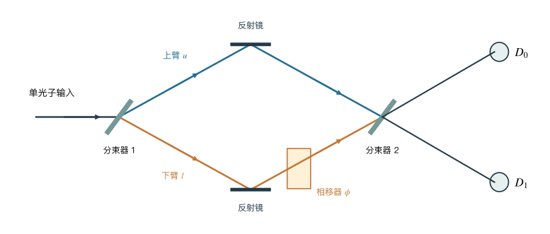
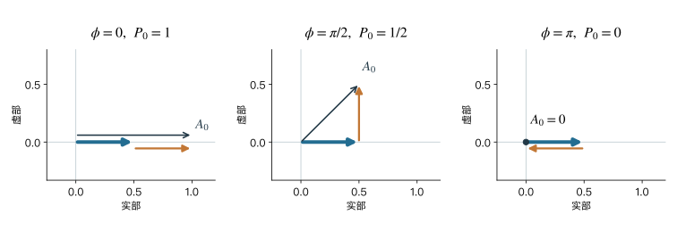
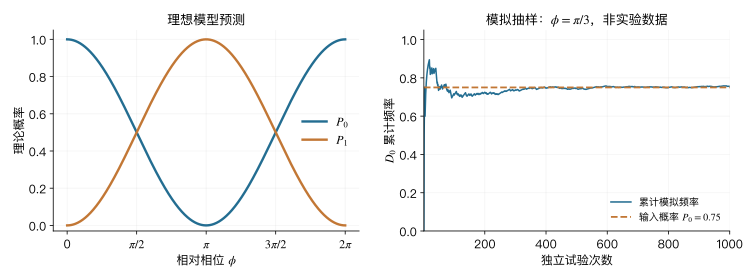

补充讲义A 单光子干涉的完整计算
一只光子进入一个有两条路径的装置。我们只改变其中一路的相位，就能把最终的探测结果从一个出口切换到另一个出口。改变的到底是什么？
阅读定位。 这份材料保留完整干涉推导，供第2讲后选读，并为第6讲与第11讲提供计算参考；不属于绪论的课堂必讲内容。
学习目标。 读完核心正文后，你应能区分概率与概率幅，完成一个双路径干涉计算，并说明这个计算依赖哪些理想化条件。所需数学只有复数、欧拉公式和简单向量；矩阵写法放在选学部分。
A.1 从一个宏观问题开始
量子计算机为什么会与密码有关？
设想有人递给你两个整数，请你把它们相乘。只要数字不太长，这是一道普通的计算题。现在反过来：只给出乘积，要你寻找它的素因子。两个问题的陈述都很简单，但在大整数上，已知算法的计算代价可能相差很大。
某些公钥密码体制利用了这种计算困难，例如RSA与整数分解问题有密切关系。Shor算法表明，在合适的量子计算模型中，整数分解可以被高效处理。这一结果涉及特定问题、算法结构和硬件要求，不能理解为量子计算机会立即破解所有密码 [14]。
这里真正值得追问的是：一台由原子、光子或电路组成的机器，为什么可能改变一个数学问题的计算方式？
一个常见说法是“量子计算机能够同时尝试所有答案”。这句话容易使人忽略测量：即使一个状态包含许多分量，测量也不会把所有分量的内容逐一交给我们。算法需要安排演化，使与目标信息有关的概率幅发生恰当的相加与相消，最终得到可读的统计结果。
这里不展开Shor算法。但可以先掌握其中一个反复出现的物理机制：让相位信息通过干涉变成测量概率。 这个机制在一个只有两条路径的光学装置中就能看清楚。
纠缠和隐形传态为什么也会出现在这门课？
另一些热门问题来自纠缠：两个相距很远的系统为什么会有特殊关联？这样的关联能不能用来瞬间传递信息？
后面我们会计算纠缠态的联合概率，并检验特定局域模型的限制。现阶段先保留一个边界：关联本身不等于可以控制接收端读到的消息。量子隐形传态也需要预先共享的纠缠和经典通信；转移的是量子态，不是把一个物体从原地搬到远方 [13]。
这些问题看起来不同，却都要求我们回答：怎样制备一个状态，怎样改变它，最后怎样测量它？本课程将从最少的状态分量开始，逐渐扩展到两个系统、光场、环境和量子技术。
为什么从光出发？
光学装置的一个优点是操作比较直观。分束器让两条路径相遇，相移器改变传播的相位，探测器记录输出。我们可以把“制备、演化、测量”分别对应到具体部件。
但本课程也会不断离开光学：原子的两个能级、自旋的两个取向、双阱中的两个局域态，都可以使用相似的数学语言。先把一个简单例子算清楚，后续便有机会认出另一个系统里的同一种结构。
A.2 一次点击与许多次试验
我们先规定一个理想实验
假设有一个装置，每次试验都准备好一个光子，并将它送入同一输入端。两次试验之间相互独立。输出端的理想探测器把光子吸收并留下一个记录；暂时忽略损耗、暗计数和探测失败。
在这个模型里，每次试验最终只记录一个输出端口。重复许多次，就能数出各个端口分别出现了多少次。
这里的“每次恰好一个光子”是模型的准备条件，并不是由“光很弱”自动推出的结论。真实实验如何检验光源、如何排除多光子与背景影响，将在光子统计部分学习。
把第一个探测器记作 \(D_0\)，第二个记作 \(D_1\)。重复 \(N\) 次，分别得到 \(N_0\) 和 \(N_1\) 个记录。在本补充的理想模型中，
\[ N_0+N_1=N. \]
如果每次得到 \(D_0\) 的概率是 \(P_0\)，那么重复试验的频率 \(N_0/N\) 会在统计意义上趋近 \(P_0\)。有限次试验通常不会严格等于理论概率。
单次结果与统计规律是两件事。 当两个出口的概率都非零时，理论给出的是结果分布；在概率恰好为零或一的理想情形，某些结果也可以被确定地排除或选中。
一个分束器还没有制造困难
先让光子经过一个平衡分束器。若只从一个输入端入射，在两个输出端直接探测，两个结果的概率各为二分之一。
这很容易被描述成一次随机选择：“光子像在岔路口抛硬币，决定走左边还是右边。”仅凭这组计数，确实还不能看出这种解释缺少了什么。
因此，我们不立即探测，而是把两条路径继续引导到第二个分束器，让它们再次相遇。问题就发生在这个“再次相遇”上。
A.3 把两条路径重新合起来
Mach–Zehnder干涉仪
图中是一个理想化的Mach–Zehnder干涉仪。第一个分束器把输入模式耦合到两条内部路径；两面反射镜将路径引向第二个分束器；第二个分束器把两路振幅合成两个输出。下臂放置一个相移器。

把内部两条路径称为 \(u\) 和 \(l\)。相移器使 \(l\) 路相对 \(u\) 路增加一个相位 \(\phi\)，其余固定相位吸收到相位零点及输入输出模式的定义中。
对于近似单色光，改变光程差 \(\Delta L_{\mathrm{opt}}\) 可以改变相位：
\[ \phi=\frac{2\pi}{\lambda_0}\Delta L_{\mathrm{opt}}, \]
其中 \(\lambda_0\) 是真空波长，\(\Delta L_{\mathrm{opt}}\) 是光程差，而不一定等于几何长度差。有限带宽的波包还要求两路在时间上有足够重叠；若改变路径使波包彼此错开，本补充的理想公式就需要修正。
先试试“每个分束器都抛一次硬币”
假设光子以二分之一概率走上臂或下臂，到第二个分束器时，再独立地以二分之一概率选择任一出口。按照这个模型，
\[ P_0=\frac12\times\frac12+\frac12\times\frac12=\frac12, \qquad P_1=\frac12. \]
因为相移器没有改变这个模型中的抛硬币概率，它预言输出比例与 \(\phi\) 无关。
然而，在保持两路相干且匹配良好的干涉仪里，输出会随相位变化。理想情形下，可以让一个端口完全变暗，再通过改变相位将它变亮。
所以，这个只保存路径概率、丢弃相位、并假定两次随机选择相互独立的模型不够用。它的失败并没有证明所有经典理论都失败：经典波动光学同样保存相位，也能得到干涉条纹。我们此处需要找到的，是一种能在单光子模型中计算这种相位效应的语言。
相移器不吸收光，也不改变两条内部路径被直接探测到的概率。如果两个概率都没有变，最终输出为什么还可能改变？要回答这个问题，描述中必须保存概率以外的信息。
A.4 概率幅：保留相位的最小语言
概率是非负实数，概率幅可以是复数
把一个可能结果的概率幅记作 \(A\)。本补充使用的概率规则是
\[ P=|A|^2. \]
若 \(A=x+iy\)，则
\[ |A|^2=A^*A=x^2+y^2. \]
复数的极坐标形式更能显示相位：
\[ A=r e^{i\theta}=r(\cos\theta+i\sin\theta), \qquad |A|^2=r^2. \]
改变 \(\theta\) 不改变这个振幅单独对应的概率。但如果还有另一个振幅与它相加，二者之间的夹角就会改变和的模长。
这个关系可以直接从代数看出来：
\[ \begin{aligned} |A+B|^2 &=(A+B)(A^*+B^*)\\ &=|A|^2+|B|^2+AB^*+A^*B\\ &=|A|^2+|B|^2+2\operatorname{Re}(A^*B). \end{aligned} \]
最后一项称为干涉项。如果只保存 \(|A|^2\) 和 \(|B|^2\)，就无法知道它的值。
什么时候加振幅，什么时候加概率？
在本补充的干涉实验中，两条路径以相干方式通向同一个最终探测结果，而且其他自由度没有留下可区分它们的记录。因此，要先把这两条路径的概率幅相加，再取模平方。
若中间路径已经被一个理想、保留传播光子的测量装置完整记录，而我们忽略这个记录，则对这个测量后的情形，需要将相互排斥的路径分支概率相加。即使没有人阅读记录，结果也不会因为人的注意与否而改变。真实相干性如何由系统与环境的联合状态决定，要到第6讲再计算。
费曼（Richard Feynman）的《费曼物理学讲义》用不同实验安排来说明概率幅相加与概率相加的区别，可以作为本节的补充阅读 [6]。 这里把相关规则作为理论输入；它们不是仅靠复数代数能够证明的物理定律。接下来能推导的是：接受这些规则及装置模型后，测量概率应当是什么。
用一列复数表示路径态
设两路概率幅分别是 \(a_u\) 和 \(a_l\)，把它们组成一个列向量：
\[ \boldsymbol{\psi}= \begin{pmatrix}a_u\\a_l\end{pmatrix}, \qquad |a_u|^2+|a_l|^2=1. \]
如果在两条内部路径上直接放置理想探测器，上式的两个模平方就是两个结果的概率。归一化条件说明：在完整列出的结果中，概率之和为一。
量子力学中也常把这个向量写成
\[ |\psi\rangle=a_u|u\rangle+a_l|l\rangle. \]
\(|u\rangle\) 和 \(|l\rangle\) 是两个路径模式的标签；竖线与尖括号是一种状态记号，称为ket。这里可暂时不使用其抽象定义，可以把它理解为同一列复数的另一种写法。
特别注意：\(|u\rangle\) 不是“存在一颗光子”的数字1，\(|l\rangle\) 也不是“没有光子”的数字0。它们描述的是同一个单光子所处的两个路径模式。
A.5 一步一步算出输出概率
先写明模型和相位约定
下面采用五个条件：
- 每次准备一个光子，另一个输入模式处于真空；只跟踪路径自由度。
- 两个分束器都平衡、无损，作用保持相干。
- 两路到达合束处时，空间、时间、频率和偏振等模式充分匹配，没有额外路径标记。
- 相移器只改变相对相位，不改变振幅大小。
- 输出由理想探测器测量，暂时忽略背景和损耗。
在选定的模式相位约定下，第二个分束器的作用写为
\[ |u\rangle\longmapsto \frac{|d_0\rangle+|d_1\rangle}{\sqrt2}, \qquad |l\rangle\longmapsto \frac{|d_0\rangle-|d_1\rangle}{\sqrt2}. \]
\(|d_0\rangle\) 与 \(|d_1\rangle\) 是两个输出模式，分别通向探测器 \(D_0\) 与 \(D_1\)。负号表示相对相位相差 \(\pi\)，并不是负概率。
不同教材可能把反射振幅写成带 \(i\) 的形式，也可能交换输出标签。只要全部传播和反射相位自洽，物理预测一致；“哪一个端口在零相位最亮”取决于约定。本补充固定采用上式，不在推导中切换约定。
第一步：准备输入
光子从选定的输入模式入射。第一个平衡分束器之后，两条内部路径的状态为
\[ |\psi_1\rangle=\frac{|u\rangle+|l\rangle}{\sqrt2}. \]
两个概率幅都是 \(1/\sqrt2\)，所以两条路径若被直接探测，概率都是 \(1/2\)。这里的系数必须是概率幅：若误写成 \(1/2\)，两个模平方的和只会得到 \(1/2\)，归一化就失败了。
第二步：在下臂积累相位
相移器将下臂振幅乘上 \(e^{i\phi}\)，得到
\[ |\psi_2\rangle= \frac{|u\rangle+e^{i\phi}|l\rangle}{\sqrt2}. \]
由于 \(|e^{i\phi}|=1\)，直接测量路径时的概率仍然各为二分之一。但相对相位已经改变。这说明，知道一组测量结果的全部概率，仍不一定知道完整的量子态。
例如，\((|u\rangle+|l\rangle)/\sqrt2\) 与 \((|u\rangle-|l\rangle)/\sqrt2\) 在路径测量中给出相同概率，却可以在后续合束测量中被区分。
第三步：把每条路径的贡献送到两个出口
把第二个分束器的两条变换规则代入：
\[ \begin{aligned} |\psi_{\mathrm{out}}\rangle &=\frac{1}{\sqrt2} \frac{|d_0\rangle+|d_1\rangle}{\sqrt2} +\frac{e^{i\phi}}{\sqrt2} \frac{|d_0\rangle-|d_1\rangle}{\sqrt2}\\ &=\frac{1+e^{i\phi}}{2}|d_0\rangle +\frac{1-e^{i\phi}}{2}|d_1\rangle. \end{aligned} \]
因此，两个输出结果的概率幅分别为
\[ A_0=\frac{1+e^{i\phi}}{2}, \qquad A_1=\frac{1-e^{i\phi}}{2}. \]
这里每条完整路径贡献的振幅大小为 \(1/2\)，来自连续经过两个平衡分束器的两个因子 \(1/\sqrt2\)。我们把“通向同一出口的路径”相加，不把两个不同出口的振幅直接相加。
第四步：由概率幅得到概率
对第一个出口，
\[ \begin{aligned} P_0 &=|A_0|^2\\ &=\frac{(1+e^{i\phi})(1+e^{-i\phi})}{4}\\ &=\frac{2+e^{i\phi}+e^{-i\phi}}{4}\\ &=\frac{1+\cos\phi}{2} =\cos^2\frac{\phi}{2}. \end{aligned} \]
对第二个出口，同样有
\[ \begin{aligned} P_1 &=|A_1|^2\\ &=\frac{(1-e^{i\phi})(1-e^{-i\phi})}{4}\\ &=\frac{2-e^{i\phi}-e^{-i\phi}}{4}\\ &=\frac{1-\cos\phi}{2} =\sin^2\frac{\phi}{2}. \end{aligned} \]
于是，本补充的核心结果是
\[ \boxed{ P_0=\cos^2\frac{\phi}{2}, \qquad P_1=\sin^2\frac{\phi}{2}. } \]
相比“抛两次硬币”的模型，新增的正是相位决定的干涉项。它让一个出口的概率增加，同时让另一个出口的概率减少。
从复平面看相加与相消
对于 \(D_0\)，两个路径贡献为 \(1/2\) 和 \(e^{i\phi}/2\)。它们可表示成复平面上的两个箭头。相位为零时，箭头同向；相位为 \(\pi\) 时，箭头反向；相位为 \(\pi/2\) 时，两箭头垂直。

箭头是计算概率幅的工具，不是光子在空间中的运动方向。箭头长度的平方对应概率；单个箭头的方向只有相对于另一个箭头才会影响干涉。
A.6 模型怎样接受检查
检查一：总概率
两个输出概率之和为
\[ P_0+P_1=\cos^2\frac{\phi}{2}+\sin^2\frac{\phi}{2}=1. \]
这是无损、完整输出空间中的归一化检查。若计算得出概率和大于一，不能解释为“量子效应很奇怪”，应先检查振幅系数和相位约定。
检查二：三个特殊相位
| 相对相位 | \(P_0\) | \(P_1\) | 物理解释 |
|---|---|---|---|
| \(0\) | \(1\) | \(0\) | 通向\(D_0\)的振幅相长，通向\(D_1\)的振幅相消 |
| \(\pi/2\) | \(1/2\) | \(1/2\) | 两个出口概率相等 |
| \(\pi\) | \(0\) | \(1\) | 亮暗端口交换 |
相位再增加 \(2\pi\)，两个概率回到原值。因此“一个端口变暗”不是光子消失，而是这个端口的总概率幅为零，光子从另一个端口被探测。
检查三：移走第二个分束器
如果在两条内部路径末端直接探测，相位变化不会改变各为二分之一的概率。这并不意味着相位“没有物理意义”；它意味着这种测量方式对该相对相位不敏感。第二个分束器恰好把相位差转成可见的输出概率差。
检查四：只保留一条路径
若在第一个分束器后将下臂完全吸收，只有一半的入射试验能继续到达第二个分束器。留下的上臂光子再以相等概率去往两个出口，因此按全部入射试验计，
\[ P_0=P_1=\frac14, \qquad P_{\mathrm{abs}}=\frac12. \]
如果只在“未被吸收、成功到达输出”的试验中作条件统计，两个出口才各占二分之一。这里区分了每次入射的无条件概率与在成功探测条件下的概率。忽略这种区别，会把损耗误当成概率守恒失败。
检查五：与经典波动光学比较
相同的线性光学装置也可以作用于经典电场的复振幅，得到相同形式的归一化输出强度。因此，仅靠本补充的余弦条纹，不能断言已经排除了经典电磁波的解释。
量子光学还会问：这个输入是否具有经过检验的单光子统计？两个探测器是否出现经典光场模型无法解释的关联？
1986年，Grangier、Roger和Aspect使用原子级联与触发探测，一方面检验分束器两侧探测的反关联，另一方面用同样的光源与触发方案观察干涉。两种实验各有职责：前者检验光场统计的非经典特征，后者观察相干干涉 [10]。 本补充保留这一区分，把关联判据的推导留到第9讲。
A.7 从公式到记录：两个例题
例题一：给定相位后的计数
设 \(\phi=\pi/3\)，理想独立试验共进行1000次。求两个端口的理论概率和平均计数。
解。 代入核心结果，
\[ P_0=\cos^2\frac{\pi}{6}=\frac34, \qquad P_1=\frac14. \]
因此期望计数分别为
\[ \mathbb{E}[N_0]=750,\qquad \mathbb{E}[N_1]=250. \]
这里说的是重复执行整组1000次试验时的平均计数。一组实际记录可以是742与258，也可以是759与241；理论并未要求每组都精确出现750与250。
在本补充的独立试验模型下，\(N_0\) 服从二项分布，标准差为
\[ \sigma_{N_0}=\sqrt{NP_0(1-P_0)} =\sqrt{187.5}\approx13.7. \]
二项分布的推导不是本补充必修内容。这个数字只用于说明：有限次计数的典型涨落有确定的统计尺度，不能见到偏差就立即宣布理论失败。

例题二：给两条路同时增加相位
设相移器对两条路径分别增加相位 \(\chi\) 和 \(\chi+\phi\)。输出概率是否改变？
解。 到达第二个分束器之前，
\[ \begin{aligned} |\psi_2'\rangle &=\frac{e^{i\chi}|u\rangle+e^{i(\chi+\phi)}|l\rangle}{\sqrt2}\\ &=e^{i\chi}\frac{|u\rangle+e^{i\phi}|l\rangle}{\sqrt2}. \end{aligned} \]
与原状态相比，整个状态只多了一个共同因子 \(e^{i\chi}\)。经过同样的线性演化，两个输出振幅也都乘上这个因子，但
\[ |e^{i\chi}A_j|^2=|A_j|^2,\qquad j=0,1. \]
输出概率不变。对这里完整描述的单光子路径态，这个共同因子称为整体相位。两臂之间的相位差 \(\phi\) 称为相对相位，它才决定干涉。
说“相位不可观测”过于笼统。准确的说法是：整体相位不改变这个态的测量预测，而相对相位可以通过适当测量显现。
A.8 回到开场的问题
现在可以解释：为什么一个不吸收光、只改变相位的元件，能够改变最终结果？
因为内部两路的概率并没有包含状态的全部信息。相移器改变了两个概率幅之间的相对相位；第二个分束器把两路的贡献重新组合；相长与相消改变各个输出的概率。
这个例子没有展示计算加速，也没有用到两个粒子的纠缠。它展示了一个后续技术反复使用的过程：准备概率幅，控制相位，重新组合，再测量。
后面学习Ramsey干涉时，两条“路”将变成原子的两个内部态；学习量子算法时，相位将携带关于问题的信息。具体硬件变化了，但今天的计算会再次出现。
也有一些问题本补充尚不能回答。例如，如何严格检验每次输入的确是一个光子？路径信息被环境记录后，为什么即使不阅读记录，干涉仍可能消失？这些不是解释的漏洞，而是后续章节要增加统计与复合系统工具才能处理的问题。
五个应当留下的结论
- 单次记录与重复统计不同；理论概率需要通过许多次试验检验。
- 概率幅保存大小与相位，概率只是其模平方。
- 对本补充相干、不可区分的两条路径，通向同一输出的振幅先相加。
- 相对相位可以改变干涉，整个态的共同相位不改变测量概率。
- 干涉条纹、单光子统计和非经典性的实验判据需要分别说明。
A.9 练习与小型探索
先尝试独立完成，再看文末参考解答。基础题只用正文中的公式；探索题可以使用计算工具或AI，但需要自己作预测并核验。
基础题
1. 概率幅的归一化。 有人把第一个分束器后的状态写成 \((|u\rangle+|l\rangle)/2\)。错误在哪里？若一般状态为 \(a_u|u\rangle+a_l|l\rangle\)，归一化条件是什么？
2. 三个相位。 求 \(\phi=\pi/2,\ 2\pi/3,\ 2\pi\) 时的两个输出概率。哪些情形能够在理想模型中确定下一个点击的端口？
3. 错误的合束算法。 一名同学按 \(|1/2|^2+|e^{i\phi}/2|^2\) 计算 \(P_0\)。他遗漏了什么？说明这个表达式在什么改变后的实验条件下可以使用。
4. 阻断一臂。 下臂完全吸收光，进行2000次理想单光子入射。两个输出的期望计数分别是多少？成功输出的试验中，两个出口的比例又是多少？
5. 相位与长度。 真空波长为800 nm，最初相位为零。若仅改变光程差，使理想亮暗端口第一次交换，所需最小正光程差变化是多少？为什么不能不看装置几何就把这个值直接当作某面镜子的位移？
探索题
6. 条纹与有限统计。 自选一个既不为零也不为一的 \(P_0\)，分别生成100次和10000次独立二项试验。先预测哪一种累计频率更稳定，再运行程序。记录概率、试验次数和随机种子，解释“一次曲线偶尔偏离较大”和“总体上更稳定”为什么不矛盾。最后说明为什么这不是量子效应的实验发现。
7. 三种装置，三种问题。 比较完整干涉仪、移走第二个分束器、保留第二个分束器但将相位逐次均匀随机化。后两者在平均计数上可能相同。仅凭这组平均计数能否区分它们？你需要额外知道或控制什么？
8. 研究窗口：干涉变浅了。 两个出口仍有相反变化的条纹，但暗端不再完全为零。至少提出两种不同原因，并为其中一种设计一个能帮助区分原因的检查。不要求使用密度矩阵。
A.10 选学：把计算压缩成矩阵
本节是对已经完成的计算进行整理，不增加新的物理假设。
把两模式的状态写成列向量，在本文相位约定下，一个有效平衡分束器可表示为
\[ B=\frac{1}{\sqrt2} \begin{pmatrix}1&1\\1&-1\end{pmatrix}, \qquad P(\phi)= \begin{pmatrix}1&0\\0&e^{i\phi}\end{pmatrix}. \]
每经过一个元件，我们都在该处选定的两模式基中写系数。输入列向量是 \((1,0)^{\mathsf T}\)，对应光子在第一个输入模式，第二个输入模式无光子；这里的两个分量不是两个光子数。
按“先作用的矩阵写在右边”的规则，
\[ \begin{aligned} \boldsymbol{\psi}_{\mathrm{out}} &=B\,P(\phi)\,B \begin{pmatrix}1\\0\end{pmatrix}\\ &=\frac12 \begin{pmatrix} 1+e^{i\phi}\\ 1-e^{i\phi} \end{pmatrix}. \end{aligned} \]
这正是正文的两路计算。第一个 \(B\) 的两个输出是内部路径，第二个 \(B\) 的输出是探测端口；我们用同一种数值矩阵表示它们在各自输入输出基中的映射。
记共轭转置为 \(\dagger\)，可以验证
\[ B^\dagger B=I,\qquad P^\dagger(\phi)P(\phi)=I. \]
这样的矩阵称为幺正矩阵。若 \(U^\dagger U=I\)，则
\[ (U\boldsymbol{\psi})^\dagger(U\boldsymbol{\psi}) =\boldsymbol{\psi}^\dagger U^\dagger U\boldsymbol{\psi} =\boldsymbol{\psi}^\dagger\boldsymbol{\psi}. \]
因此幺正变换保持归一化。第二讲和第三讲会把这种矩阵语言用于测量基与时间演化。
A.11 选学：相位不稳定时会怎样？
假设每一次光子通过干涉仪时，相位是确定的；但不同次试验的相位不同。这对应相位在单次传播期间近似不变、在采样过程中发生漂移的情形。
若相位在 \(0\) 到 \(2\pi\) 上均匀分布，而实验记录不保留每次的相位值，则平均输出概率为
\[ \begin{aligned} \overline{P_0} &=\frac{1}{2\pi}\int_0^{2\pi} \frac{1+\cos\phi}{2}\,\mathrm d\phi\\ &=\frac12, \qquad \overline{P_1}=\frac12. \end{aligned} \]
每个固定相位对应的理想预测都有相位依赖，但把许多相位混在一起后，平均计数不再显示条纹。计数各半并不唯一对应“两个分束器各自抛硬币”的机制。
再看一个可计算的部分随机化模型：相位为 \(\phi_0+\delta\)，其中 \(\delta\) 以相等概率取 \(+\theta\) 或 \(-\theta\)。于是
\[ \begin{aligned} \overline{P_0} &=\frac12\left[ \frac{1+\cos(\phi_0+\theta)}2+ \frac{1+\cos(\phi_0-\theta)}2 \right]\\ &=\frac{1+\cos\theta\cos\phi_0}{2}. \end{aligned} \]
定义扫描 \(\phi_0\) 时的可见度为
\[ V=\frac{P_{0,\max}-P_{0,\min}} {P_{0,\max}+P_{0,\min}}. \]
在这个模型里，\(V=|\cos\theta|\)。特别地，\(\theta=\pi/2\) 时，两个子样本的条纹互补，混合后平均条纹消失。若记录了每次的相位标签，就可以分别画出子样本。
这只是可见度降低的一种机制。模式失配、路径标记、不平衡以及探测背景也可能使暗端不为零。只测到一个较小的可见度，通常不足以唯一判断原因。
A.12 练习参考解答与阅读线索
参考解答
1. 两个系数的模平方之和只有 \(1/2\)。正确的归一化条件是 \(|a_u|^2+|a_l|^2=1\)；平衡且同相时，两个系数均为 \(1/\sqrt2\)。
2. 对应的 \((P_0,P_1)\) 依次为 \((1/2,1/2)\)、\((1/4,3/4)\)、\((1,0)\)。最后一种情形的理想输出确定为 \(D_0\)；前两种只能给出概率。
3. 遗漏交叉项 \(\cos\phi/2\)。若内部路径经过完整、保留光子的理想测量，结果记录被忽略，并且光子再由第二个分束器合束，这时两条分支按概率相加。相位均匀随机化后的平均概率也得到同一个数，但物理机制不同。
4. 两个出口期望计数均为500，另有1000次期望被下臂吸收。在成功输出的子样本中，两个出口各占二分之一。
5. 亮暗端口交换需要相对相位变化 \(\pi\)，因此光程差变化为400 nm。镜子位移与光程差变化的关系取决于入射角和是否往返传播，不能直接等同。
6. 频率估计的标准差为 \(\sqrt{P_0(1-P_0)/N}\)。在其他条件相同时，把次数从100增至10000，标准差缩小到原来的十分之一，但个别有限样本仍可能有不规则起伏。抽样程序输入的就是理论概率，结果检验的是程序与统计预期，不是独立检验光子。
7. 单凭两个平均计数不能区分。可以检查装置是否含第二个分束器，并稳定或记录相位；有合束且相位受控时应恢复可扫描的条纹，没有合束时该路径测量不显示相位依赖。
8. 例如相位漂移与偏振失配。前者可通过更短时间分段、记录相位或主动稳定来检查；后者可通过检查并匹配两臂偏振来检查。改变探测背景、核查分束比也有帮助。一次检查未必能排除多个同时存在的机制。
继续阅读
- 概率幅的物理动机： 《费曼物理学讲义》第三卷第一章。先比较不同实验安排与相加规则，不必一次读完所有讨论 [6]。
- 量子光学的整体框架： Fox教材的导论及后续光子统计部分 [7]。
- 真实实验如何分别检验统计和干涉： Grangier等人的原始论文。初读只需辨认两种装置分别测量什么，不要求复算实验误差 [10]。
读完本补充后可以继续思考：这里用路径区分了两个状态。如果改成光子的两种偏振，或者原子的两个内部态，“状态”和“测量”的数学规则是否仍然相同？